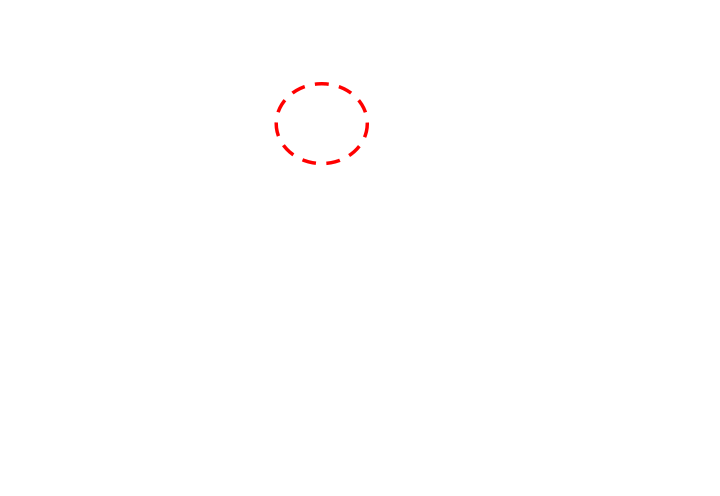
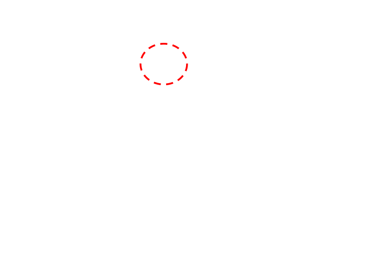
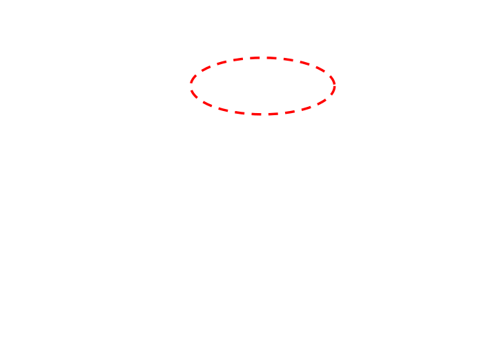
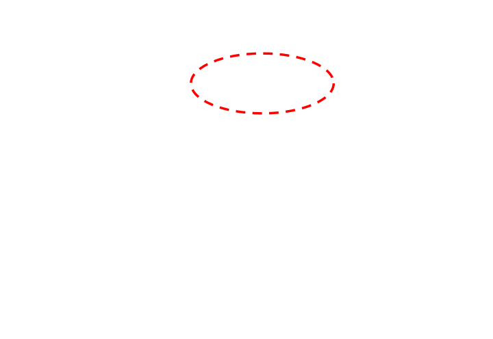
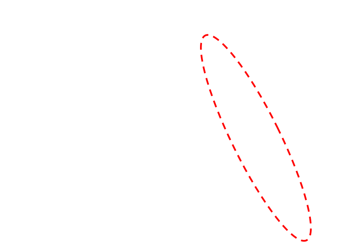
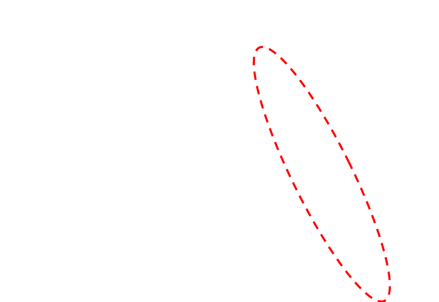

Complete object extents, even with partial observations. AmodalBox aligns image-generated 3D assets with sparse LiDAR to recover amodal bounding boxes.
AmodalBoxBaselineHuman annotation
See the annotations
Qualitative comparisons
Three examples from the supplementary presentation. Red dashed circles highlight the differences between OpenBox and AmodalBox.
Example 1
Distant, partial observations

OpenBox

AmodalBox (Ours)
Human Annotation
OpenBox can sometimes produce mislocalized boxes because it relies only on distant, partially observed point clouds for annotation. In contrast, AmodalBox first recovers the full object extent and then generates the bounding box, making it less vulnerable to this issue.
Example 2
Height localization

OpenBox

AmodalBox (Ours)
Human Annotation
OpenBox relies on local point clouds for height refinement, so when local points are missing, the box can be shifted downward. AmodalBox instead aligns a 3D asset through matching and generates the box from the aligned asset, leading to more precise localization.
Example 3
Pedestrian recall

OpenBox

AmodalBox (Ours)
Human Annotation
OpenBox may miss pedestrians when the unprojected instance-level point cloud is filtered out during refinement. AmodalBox avoids this failure mode, achieving higher recall and successfully annotating those pedestrians.
Novel categories
Open-vocabulary examples
AmodalBox annotates novel categories such as strollers and stones by aligning generated 3D assets with observed geometry.
Additional nuScenes results under the base/novel split used by OVM3D-Det.
Base and novel class AP from rebuttal Table 1.
Method
Base APB ↑
Novel APN ↑
OVM3D-Det
13.3
11.8
AmodalBox
26.5
23.2
Baseline values are as reported by OVM3D-Det; AmodalBox is evaluated under the same protocol. APB and APN refer to that method’s base and novel class splits. The qualitative examples above are separate illustrations. Source: rebuttal, Table 1.
Abstract
Recent progress in vision foundation models has made automated open-vocabulary 3D bounding box annotation increasingly feasible by jointly leveraging LiDAR point clouds and images. However, partial observations remain a major challenge in sparse driving scenes, where visible LiDAR points often cover only a small fraction of an object’s surface and provide insufficient cues for estimating its full spatial extent.
We propose AmodalBox, an automated annotation framework that uses image-generated 3D assets as amodal geometric priors for partially observed objects. Correspondences between input images and rendered asset views align canonical amodal geometry with world-space LiDAR point clouds. To improve temporal consistency and reduce computation, AmodalBox generates a single asset per instance, estimates its metric scale once for dynamic instances, and aggregates multi-frame observations for static instances. Detectors trained on these annotations achieve 42.8 mAP on nuScenes and 82.94 vehicle AP at IoU 0.5 on Waymo.
How it works
Amodal geometry for 3D annotation
Use the visible image to infer an object’s shape, then align it to the observed scene.
Static instances. Aggregate correspondences across frames to improve the estimate of a single world-space alignment.
Dynamic instances. Estimate metric scale at an anchor frame, then update pose over time while preserving the instance’s scale.
Experiments
Better annotations, stronger detectors
3D detection performance of models trained on automatically generated annotations.
42.8mAP
nuScenes validation
37.6NDS
nuScenes validation
82.94AP3D
Waymo vehicle · IoU 0.5
nuScenes
Detection performance across the ten nuScenes classes. Higher is better.
nuScenes validation results, summarized from Table 1 of the paper.
Method
mAP ↑
NDS ↑
UP-VL
11.3
17.2
Find n’ Propagate
16.7
22.4
OpenSight
22.9
23.3
AnnofreeOD
22.4
26.4
OV-SCAN
31.1
32.8
OV-SCAN†
28.7
31.4
AmodalBox (Ours)
42.8
37.6
† OV-SCAN trained with TransFusion without its semantic alignment head. AmodalBox improves mAP by 14.1 points over this variant and by 11.7 points over OV-SCAN. Source: paper, Table 1.
Waymo Open Dataset
Scenario 1 results. Each column reports AP3D at the indicated IoU threshold.
Waymo Open Dataset Scenario 1 detection results from Table 2a of the paper.
Method
Vehicle
Pedestrian
Cyclist
IoU 0.5
IoU 0.7
IoU 0.3
IoU 0.5
IoU 0.3
IoU 0.5
CPD
30.30
20.90
14.28
11.22
3.47
3.08
OpenBox
70.49
32.41
57.95
17.11
20.81
2.15
AmodalBox
82.94
36.16
55.92
6.41
12.11
9.33
AmodalBox*
84.37
47.88
65.18
20.66
13.16
9.63
* Training annotations combine OpenBox and AmodalBox with class-wise non-maximum suppression. Bold numbers indicate the best value in each column. Source: paper, Table 2a. See the paper for Scenario 2 and the full evaluation protocol.
Partial visibility
Recovering the missing extent
Amodal shape priors help localize objects when only part of their surface is observed.
nuScenes (left) and Waymo (right). Red boxes show human labels, blue boxes show automated annotations, and colored points show aligned amodal assets.
Performance across visibility levels
Detectors trained on AmodalBox annotations improve mAP across all four official nuScenes camera visibility bins. The comparison highlights the benefit of complete shape priors when observed geometry is sparse.
Full details, ablations, and limitations are available in the paper and appendix.
Generated annotations are evaluated directly against human labels on 50 randomly sampled nuScenes training scenes.
From partial LiDAR to amodal boxes
3D asset generation and matching add 21.05 mAP. Motion-aware alignment adds another 6.78 mAP by sharing instance geometry across frames.
Module ablation on 50 nuScenes training scenes
Annotation pipeline
mAP ↑
NDS ↑
Partial LiDAR only
3.57
5.76
+ 3D asset generation & matching
24.62
26.30
+ Motion-aware alignment (full)
31.40
31.13
Modules are added incrementally. These are direct annotation results, separate from the downstream detector results above. Table 4a.
Correspondence and scale prior
Dense matching improves mAP by 9.60 points over ICP at the same prior strength. The category size prior suppresses rare, extremely large boxes.
Correspondence and category size prior
Correspondence
λ
mAP ↑
NDS ↑
Volume ratio p99 ↓
Volume >20× (%) ↓
ICP
1
21.80
20.72
15.88
0.54
Dense matching (default)
1
31.40
31.13
4.41
0.05
Dense matching
0
31.99
31.65
12.65
0.72
Dense matching
0.1
32.24
31.93
7.57
0.23
Dense matching
10
29.77
29.03
3.30
0.00
The highlighted row is the default setting. Volume ratio is box volume divided by class-prior volume; p99 is its 99th percentile. With λ = 1, boxes above 20× the prior volume decrease from 0.72% to 0.05% compared with no prior. Table 4b.
Robustness to imperfect assets and motion estimates
Generated asset quality
Removing half the amodal geometry has the largest effect on mAP. Appearance corruption mainly reduces coverage.
Sensitivity to generated asset quality
Asset corruption
mAP ↑
Coverage (%) ↑
mATE ↓
mASE ↓
Amodal half removed
19.3
41.2
0.826
0.708
Same-class swap
21.2
39.7
0.658
0.609
Appearance flattening
24.8
43.5
0.593
0.538
Anisotropic extent (30%)
29.0
50.7
0.597
0.597
None (AmodalBox)
31.4
51.1
0.518
0.499
Coverage is recall at a 2 m center distance. mATE and mASE measure translation and scale error. The highlighted row uses unmodified assets. Table 5a.
Motion-state errors
At a 40% flip rate, dynamic-to-static errors cost 3.46 mAP relative to the oracle, versus 0.99 for the reverse.
Sensitivity to motion state errors
Motion state
mAP ↑
NDS ↑
Estimated (AmodalBox)
31.40
31.13
Oracle
33.50
32.01
Dynamic to static: 10%
32.79
31.78
Dynamic to static: 20%
31.49
31.09
Dynamic to static: 40%
30.04
30.55
Static to dynamic: 10%
33.08
31.72
Static to dynamic: 20%
33.16
31.91
Static to dynamic: 40%
32.51
31.27
Oracle motion states come from human annotation tracks. Each flip rate is applied to oracle states. The highlighted row uses estimated motion states. Table 5b.
Supplementary experiments
Sparse observations and practical behavior
Additional analysis of LiDAR visibility, small objects, cross-view association, and runtime.
Distance and LiDAR visibility
Detectors trained with AmodalBox annotations improve over OV-SCAN in every reported distance–visibility subset. The table below focuses on the lowest point-density tertile.
Low LiDAR visibility subset by distance
Distance
OV-SCAN mAP ↑
AmodalBox mAP ↑
OV-SCAN NDS ↑
AmodalBox NDS ↑
0–10 m
2.18
7.37
10.48
18.51
10–20 m
3.05
7.27
13.81
17.28
20–30 m
2.88
6.55
12.96
16.51
30–40 m
2.63
4.17
13.36
13.76
nuScenes validation. Visibility is a proxy based on class-specific LiDAR point-count tertiles. Human boxes with zero LiDAR points are excluded. Values are downstream detector results. Table 11.
All distance and point-density subsets
Full distance and LiDAR visibility results
Distance
Point density
OV-SCAN mAP ↑
AmodalBox mAP ↑
OV-SCAN NDS ↑
AmodalBox NDS ↑
0–10 m
Low
2.18
7.37
10.48
18.51
0–10 m
Mid
4.75
11.27
15.24
17.64
0–10 m
High
54.15
64.92
47.34
51.44
10–20 m
Low
3.05
7.27
13.81
17.28
10–20 m
Mid
11.67
22.77
22.67
26.27
10–20 m
High
43.04
60.48
37.61
45.51
20–30 m
Low
2.88
6.55
12.96
16.51
20–30 m
Mid
18.05
32.20
23.33
30.90
20–30 m
High
27.46
46.77
28.21
38.86
30–40 m
Low
2.63
4.17
13.36
13.76
30–40 m
Mid
15.41
25.87
19.50
26.01
30–40 m
High
10.45
23.81
16.04
24.81
Small, deformable, and thin objects
79% of ground-truth pedestrians have at most 15 LiDAR points. These sparse instances limit recall; with at least 16 points, AmodalBox recovers 96.3–98.6% of pedestrians.
Pedestrian recall by LiDAR density
LiDAR points
GT share (%)
AmodalBox recall (%) ↑
OpenBox recall (%) ↑
1–5
46
15.6
40.3
6–15
33
63.0
66.2
16–40
12
96.3
74.3
>40
9
98.6
67.9
Recall uses a 2 m center-distance threshold. Overall pedestrian precision is 94.9% for AmodalBox and 78.8% for OpenBox. Table 8b.
Per-class raw annotation quality
Raw annotation quality per superclass
Class
Coverage (%) ↑
Precision (%) ↑
ATE ↓
ASE ↓
Vehicle
62.3
81.0
0.35
0.25
Pedestrian
47.8
94.9
0.26
0.40
Cyclist
60.7
82.3
0.31
0.48
Coverage is recall at 2 m. ATE and ASE are translation and scale errors of matched annotations. Pedestrians have the lowest coverage; cyclists have the largest scale error. Table 8a.
Density-conditioned fallback
For pedestrians with at most 15 LiDAR points, fitting the observed points with a category size prior raises detector AP from 46.7 to 62.0.
Density fallback under the nuScenes 3-class protocol
Annotation source
Vehicle AP ↑
Pedestrian AP ↑
Cyclist AP ↑
OpenBox (reported)
40.9
62.7
5.2
AmodalBox
59.5
46.7
25.1
AmodalBox + density fallback
60.1
62.0
26.6
nuScenes 3-class detector protocol. OpenBox numbers are reported from its paper. The fallback approaches OpenBox’s pedestrian AP of 62.7 while retaining the vehicle and cyclist gains. Table 3.
Cross-view association and duplicate removal
Associating tracks across cameras and applying class-wise BEV NMS reduces residual duplicates and improves direct annotation mAP by 2.2 points.
Effect of cross-view association and duplicate removal
Cross-view association & NMS
mAP ↑
NDS ↑
Boxes / keyframe
Off
29.2
29.6
18.7
On (AmodalBox)
31.4
31.1
13.8
Direct annotation evaluation on 50 nuScenes training scenes. The average number of annotated boxes per keyframe decreases from 18.7 to 13.8. Table 10.
Runtime breakdown
Asset generation and rendering run once per track. Matching, alignment, and box fitting run for each track-frame and account for most of the annotation time.
Training split annotation runtime on 4 NVIDIA B200 GPUs
Stage
Runs per
nuScenes
Waymo
2D instance & motion cues
Frame
~4 h
~18 h
Asset generation & rendering
Track
~11 h
~38 h
Matching, alignment & box fitting
Track-frame
~35 h
~100 h
Total
Training split
~50 h
~156 h
Approximate wall-clock runtime for the complete training splits on 4 NVIDIA B200 GPUs. Table 9.
Limitations
Failure cases
Detection errors, incorrect motion states, and unreliable image matching can propagate into 3D annotations.
Red boxes: human annotations. Blue boxes: AmodalBox. Orange dashed regions highlight the failure locations. Appendix, Figure 5.
A
Reflection-induced false positives
A vehicle reflected in glass is detected as a real instance. The flat glass point cloud can still align with part of the generated vehicle asset, producing false boxes.
B
Incorrect motion state
A moving truck is temporarily classified as static. Aggregating its observations with the wrong motion model yields an erroneous box.
C
Matching errors in adverse weather
The real rear wheel is matched to the rendered front wheel. Incorrect 2D correspondences propagate into erroneous 3D alignment.
3D asset generation errors
The image-to-3D model can also fail when the input is distant or the instance mask overlaps multiple objects.
A distant sitting pedestrian produces incorrect geometry (left pair). A mask overlapping two vehicles corrupts the generated asset (right pair). Rebuttal, Figure 1(A).
BibTeX
@inproceedings{lee2026amodalbox,
title = {AmodalBox: Automated 3D Bounding Box Annotation
under Partial Visibility},
author = {Lee, In-Jae and Kim, Namtae and Exley, Robert
and Ryu, Kwonyoung and Park, Jaesik},
booktitle = {Conference on Robot Learning},
year = {2026}
}